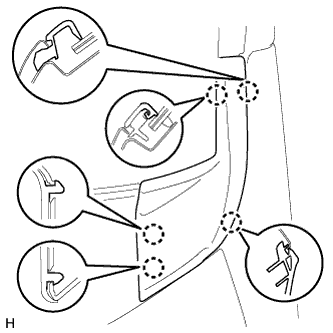
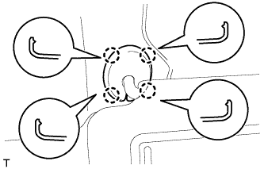
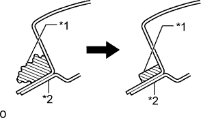

ВЕТРОВОЕ СТЕКЛО > СНЯТИЕ |
| 1. ОТСОЕДИНИТЕ ПРОВОД ОТ ОТРИЦАТЕЛЬНОГО ВЫВОДА АККУМУЛЯТОРНОЙ БАТАРЕИ |
| 2. СНИМИТЕ ВЕРХНЕЕ УПЛОТНЕНИЕ КРОНШТЕЙНА РАДИАТОРА |
Освободите 13 фиксаторов и снимите верхнее уплотнение кронштейна радиатора.
| 3. СНИМИТЕ ЗАЩИТУ БОКОВОЙ ПАНЕЛИ ЛЕВОГО ПЕРЕДНЕГО КРЫЛА |
Освободите 3 фиксатора и направляющую и снимите защиту боковой панели переднего крыла.
| 4. СНИМИТЕ ЗАЩИТУ БОКОВОЙ ПАНЕЛИ ПРАВОГО ПЕРЕДНЕГО КРЫЛА |
| 5. СНИМИТЕ ПРОКЛАДКУ МЕЖДУ ЛЕВЫМ ПЕРЕДНИМ КРЫЛОМ И КОЖУХОМ |
|  |
Освободите 5 захватов и снимите уплотнение между левым передним крылом и кожухом.
| 6. УСТАНОВИТЕ ПРОКЛАДКУ МЕЖДУ ПРАВЫМ ПЕРЕДНИМ КРЫЛОМ И КОЖУХОМ |
| 7. СНИМИТЕ НАКЛАДКУ РЫЧАГА СТЕКЛООЧИСТИТЕЛЯ ВЕТРОВОГО СТЕКЛА |
 |
С помощью отвертки расцепите 3 захвата и снимите накладку рычага стеклоочистителя.
| *1 | Защитная клейкая лента |
| 8. СНИМИТЕ РЫЧАГ ЛЕВОГО ПЕРЕДНЕГО СТЕКЛООЧИСТИТЕЛЯ СО ЩЕТКОЙ В СБОРЕ |
 |
Отверните гайку и снимите рычаг левого переднего стеклоочистителя со щеткой в сборе.
| 9. СНИМИТЕ РЫЧАГ ПРАВОГО ПЕРЕДНЕГО СТЕКЛООЧИСТИТЕЛЯ СО ЩЕТКОЙ В СБОРЕ |
Отверните гайку и снимите рычаг правого переднего стеклоочистителя со щеткой в сборе.
| 10. СНИМИТЕ ВЕНТИЛЯЦИОННУЮ РЕШЕТКУ В ВЕРХНЕЙ ЧАСТИ КОЖУХА В СБОРЕ |
 |
Снимите 2 фиксатора.
Расцепите 6 захватов и направляющую (A).
| *1 | Направляющая A |
| *2 | Направляющая B |
Освободите 10 направляющих (B) и вытяните вентиляционную решетку в верхней части кожуха в сборе.
| 11. СНИМИТЕ ЛЕВЫЙ НИЖНИЙ НАРУЖНЫЙ МОЛДИНГ ВЕТРОВОГО СТЕКЛА |
 |
Снимите наружный молдинг ветрового стекла.
Поместите под молдинг защитную клейкую ленту.
С помощью съемника молдинга расцепите 6 фиксаторов и снимите молдинг.
| 12. СНИМИТЕ ПРАВЫЙ НИЖНИЙ НАРУЖНЫЙ МОЛДИНГ ВЕТРОВОГО СТЕКЛА |
| 13. СНИМИТЕ ФИКСАТОР НАРУЖНОГО МОЛДИНГА ВЕТРОВОГО СТЕКЛА № 1 |
 |
Снимите 5 фиксаторов молдинга ветрового стекла № 1.
| 14. СНИМИТЕ ФИКСАТОР НАРУЖНОГО МОЛДИНГА ВЕТРОВОГО СТЕКЛА № 3 |
Вставьте сверло диаметром 4 мм (0,157 дюйма) в дрель.
Обмотайте дрель защитной лентой примерно в 5 мм (0,197 дюйма) от конца дрели.
Слегка нажмите дрелью на фиксаторы наружного молдинга ветрового стекла № 3, высверлите фланцы и снимите фиксаторы наружного молдинга ветрового стекла № 3.
С помощью пылесоса удалите все фрагменты фиксатора наружного молдинга ветрового стекла № 3 и стружку из мест сверления.
| 15. СНИМИТЕ ОПОРНУЮ НАКЛАДКУ ЛЕВОЙ ДВЕРИ В СБОРЕ |
 |
Наклейте защитную ленту вокруг опорной накладки двери.
С помощью отвертки освободите 4 фиксатора, 10 захватов и 2 направляющих и снимите опорную накладку двери.
| *1 | Защитная клейкая лента |
| 16. СНИМИТЕ ОПОРНУЮ НАКЛАДКУ ПРАВОЙ ДВЕРИ В СБОРЕ |
| 17. СНИМИТЕ БОКОВУЮ ОБЛИЦОВОЧНУЮ НАКЛАДКУ С ЛЕВОЙ СТОРОНЫ КОЖУХА |
 |
Снимите фиксатор.
Освободите фиксатор и захват и снимите боковую облицовочную накладку кожуха.
| 18. СНИМИТЕ БОКОВУЮ ОБЛИЦОВОЧНУЮ НАКЛАДКУ С ПРАВОЙ СТОРОНЫ КОЖУХА |
| 19. СНИМИТЕ УПЛОТНИТЕЛЬ ОБШИВКИ ПРОЕМА ЛЕВОЙ ПЕРЕДНЕЙ ДВЕРИ |
 |
Снимите уплотнитель обшивки проема передней двери.
| 20. СНИМИТЕ УПЛОТНИТЕЛЬ ОБШИВКИ ПРОЕМА ПРАВОЙ ПЕРЕДНЕЙ ДВЕРИ |
| 21. СНИМИТЕ ЛЕВУЮ ПЕРЕДНЮЮ ЗАГЛУШКУ ВЕРХНЕГО ПОРУЧНЯ № 1 |
 |
С помощью отвертки освободите 2 захвата и снимите переднюю заглушку верхнего поручня № 1.
| *1 | Защитная клейкая лента |
| 22. СНИМИТЕ ПРАВУЮ ПЕРЕДНЮЮ ЗАГЛУШКУ ВЕРХНЕГО ПОРУЧНЯ № 1 |
| 23. СНИМИТЕ ВЕРХНИЙ ПОРУЧЕНЬ № 1 |
 |
Отверните 2 болта.
Освободите 2 захвата и снимите верхний поручень № 1.
| 24. СНИМИТЕ ОБИВКУ ЛЕВОЙ СТОЙКИ ВЕТРОВОГО СТЕКЛА |
 |
Отсоедините 3 направляющие и снимите обивку стойки ветрового стекла.
 |
Для моделей с подушкой безопасности занавесочного типа:
Защитите подушку безопасности занавесочного типа в сборе.
Полностью укройте подушку безопасности куском ткани или нейлона и закрепите края ткани клейкой лентой, как показано на рисунке.
| *1 | Подушка безопасности занавесочного типа в сборе |
| *2 | Клейкая лента |
| *3 | Защитное покрытие |
| 25. СНИМИТЕ ОБИВКУ ПРАВОЙ СТОЙКИ ВЕТРОВОГО СТЕКЛА |
| 26. СНИМИТЕ КРЫШКУ КРОНШТЕЙНА ЛЕВОГО ПРОТИВОСОЛНЕЧНОГО КОЗЫРЬКА |
|  |
Освободите 4 захвата и снимите крышку кронштейна противосолнечного козырька.
| 27. СНИМИТЕ КРЫШКУ КРОНШТЕЙНА ПРАВОГО ПРОТИВОСОЛНЕЧНОГО КОЗЫРЬКА |
| 28. СНИМИТЕ ЛЕВЫЙ ПРОТИВОСОЛНЕЧНЫЙ КОЗЫРЕК В СБОРЕ |
 |
Выверните 2 винта и снимите козырек.
| 29. СНИМИТЕ ПРАВЫЙ ПРОТИВОСОЛНЕЧНЫЙ КОЗЫРЕК В СБОРЕ |
| 30. СНИМИТЕ ДЕРЖАТЕЛЬ ПРОТИВОСОЛНЕЧНОГО КОЗЫРЬКА |
 |
Поверните держатель козырька примерно на 45° и вытяните его, как показано на рисунке.
Расцепите 2 захвата и снимите держатель противосолнечного козырька.
| 31. СНИМИТЕ ЛАМПУ ИНДИВИДУАЛЬНОГО ОСВЕЩЕНИЯ |
 |
Освободите 4 фиксатора.
Отсоедините разъем и снимите лампу индивидуального освещения.
| 32. СНИМИТЕ КРЫШКУ ДАТЧИКА ДОЖДЯ (для моделей с датчиком дождя) |
 |
Расцепите 2 захвата и снимите крышку датчика дождя.
| 33. СНИМИТЕ ДАТЧИК ДОЖДЯ (при наличии датчика дождя) |
 |
Отсоедините разъем.
Освободите фиксатор, отжав его вниз.
| *1 | Стопор |
Снимите датчик дождя, как показано на рисунке.
| 34. СНИМИТЕ ВНУТРЕННЕЕ ЗЕРКАЛО ЗАДНЕГО ВИДА В СБОРЕ (для моделей без зеркала с электрохромным покрытием) |
Нажмите на крышку в направлении, указанном на рисунке стрелками А, и снимите ее.
Нажимая на захват в направлении, указанном на рисунке черной стрелкой B, сдвиньте зеркало в направлении, указанном белой стрелкой, и снимите его.
| *1 | Крышка |
| *2 | Захват |
| 35. СНИМИТЕ КРЫШКУ ДЕРЖАТЕЛЯ СТОЙКИ ВНУТРЕННЕГО ЗЕРКАЛА ЗАДНЕГО ВИДА (для моделей с зеркалом с электрохромным покрытием) |
 |
Отсоедините 2 захвата и сдвиньте крышку держателя стойки внутреннего зеркала заднего вида в направлении, указанном на рисунке стрелкой.
 |
Освободите 2 захвата и снимите крышку держателя стойки внутреннего зеркала заднего вида.
| 36. СНИМИТЕ ВНУТРЕННЕЕ ЗЕРКАЛО ЗАДНЕГО ВИДА В СБОРЕ (для моделей с зеркалом с электрохромным покрытием) |
Отсоедините разъем.
С помощью торцевого ключа "TORX" (T20) выверните винт и снимите внутреннее зеркало заднего вида.
| 37. СНИМИТЕ ОБИВКУ КРЫШИ В СБОРЕ |
Для моделей с люком:
Частично снимите обивку крыши.
Для моделей без люка:
Частично снимите обивку крыши.
| 38. СНИМИТЕ ВЕТРОВОЕ СТЕКЛО |
| *A | 1-секционного типа | *B | 2-секционного типа |
| *1 | Фиксатор ветрового стекла № 1 | *2 | Фиксатор ветрового стекла № 2 |
 |
Наложите защитную клейкую ленту на наружную поверхность кузова автомобиля во избежание появления на ней царапин.
| *1 | Защитная клейкая лента |
 |
Пропустите струнную проволоку между кузовом автомобиля и стеклом из салона, как показано на рисунке.
Привяжите к обоим концам проволоки предметы, заменяющие ручки (например, деревянные бруски).
| *1 | Лист пластика |
| *2 | Струнная проволока |
| *3 | Деревянные бруски |
| *4 | Защитная клейкая лента |
| *5 | Стопор |
 |
Нанесите метки на стекло и кузов автомобиля в местах, показанных на рисунке.
| *a | Метка |
С системой противообледенителя ветрового стекла:
Отсоедините разъем противообледенителя ветрового стекла.
Срежьте герметик, протянув струнную проволоку вокруг стекла.
Расцепите фиксаторы.
Используя вакуумные присоски, снимите стекло.
| 39. СНИМИТЕ КЛЕЙКИЙ УПЛОТНИТЕЛЬ ВЕТРОВОГО СТЕКЛА |
С помощью скребка удалите клейкий уплотнитель.
| 40. СНИМИТЕ НАРУЖНЫЙ МОЛДИНГ ВЕТРОВОГО СТЕКЛА |
С помощью скребка удалите молдинг.
| 41. СНИМИТЕ ФИКСАТОР ВЕТРОВОГО СТЕКЛА № 2 |
С помощью скребка снимите 2 фиксатора.
| 42. СНИМИТЕ ФИКСАТОР ВЕТРОВОГО СТЕКЛА № 1 (2-секционного типа) |
Снимите 2 фиксатора № 1.
| 43. ОЧИСТИТЕ ВЕТРОВОЕ СТЕКЛО |
С помощью скребка удалите поврежденные фиксаторы стекла, уплотнитель, а также герметик, прилипший к стеклу.
Очистите наружную кромку стекла растворителем, не содержащим смолистых веществ.
| 44. ОЧИСТИТЕ ПОВЕРХНОСТЬ КУЗОВА АВТОМОБИЛЯ |
|  |
Очистите и сформируйте поверхность соприкосновения кузова.
С помощью ножа срежьте все неровные участки герметика с поверхности контакта на кузове автомобиля, как показано на рисунке.
Очистите поверхность контакта на кузове техническим бензином.
| *1 | Герметик |
| *2 | Кузов автомобиля |